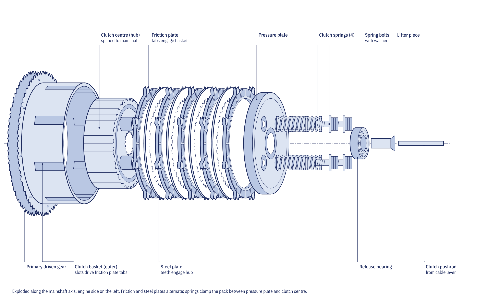
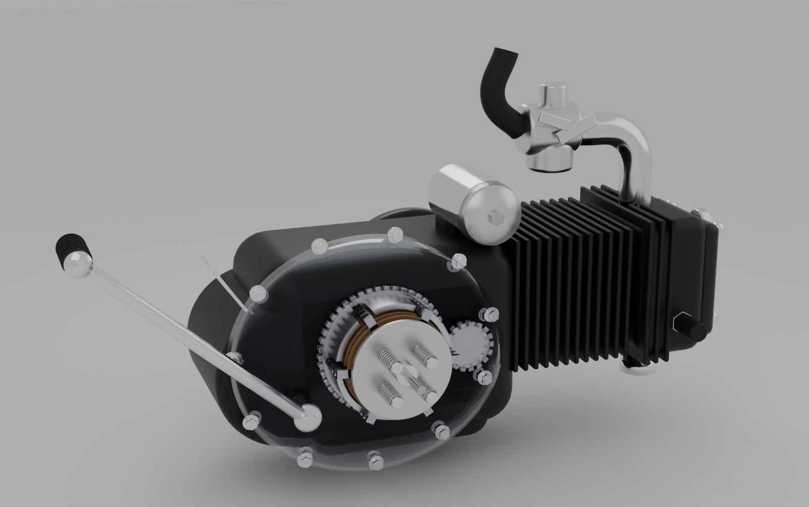

What the clutch does
An engine cannot run below its idle speed, yet the motorcycle has to start from a standstill and stop at junctions. The clutch sits between the engine and the gearbox and lets the rider disconnect the two, then reconnect them gradually so that the wheel picks up speed without stalling the engine. It also lets the rider change gear without the gear teeth carrying load, and it limits the torque that a sudden shock can send through the drivetrain.
A car uses one large friction disc. A motorcycle clutch has to fit inside the crankcase cover, so it uses many small plates working in parallel. On almost every motorcycle those plates run in the engine oil, which is why it is called a wet multiplate clutch. The oil carries heat away and makes engagement smooth, at the cost of a little drag and a lower friction coefficient than a dry clutch.
The parts, in the order torque passes through them

- Primary drive. A small gear on the crankshaft drives a large gear on the back of the clutch basket. This first reduction means the clutch turns at only a quarter to a third of crankshaft speed. A 20-tooth pinion driving a 68-tooth gear gives a ratio of 3.40, so at 9,000 rpm the clutch turns at about 2,650 rpm.
- Clutch basket. An aluminium cup with slots around its rim, turning freely on the gearbox mainshaft. Cushion springs between the gear and the basket soak up the pulses of a single-cylinder engine.
- Friction plates. Discs faced with cork, paper-based or sintered material, with tabs on the outside that lock into the basket slots. A 125 cc engine typically has four or five; a 1,000 cc sports engine eight to ten.
- Steel plates. Plain steel discs with teeth on the inside that lock onto the clutch hub. They sit between the friction plates.
- Clutch hub. Splined to the gearbox mainshaft and held by a locknut.
- Pressure plate and springs. Four to six coil springs, or one diaphragm spring, clamp the whole stack against the hub.
- Release mechanism. When the lever is pulled, a cable or hydraulic cylinder pushes the pressure plate away from the stack against the springs.
Engaged and released
With the lever out, the springs squeeze the stack so that the friction plates, turning with the basket and the engine, lock to the steel plates, turning with the hub and the gearbox. Torque flows from the basket to the hub to the mainshaft. Pulling the lever compresses the springs and lets the stack open by a total of only about 0.5 to 1.0 mm. The plates then slide past each other in a film of oil, and the engine can keep running while the gearbox stops.
Between those two states is the friction point, where the plates slip partly. Riders use it to pull away smoothly, and it is also where most clutch wear happens, which is why heavy stop-start work such as taxi riding wears clutches quickly.

How much torque a clutch can carry
The slip torque of a plate clutch is the friction coefficient multiplied by the total spring force, the mean radius of the friction lining and the number of friction faces. Each friction plate has two faces, so five plates give ten. For a 125 cc clutch with five plates, a mean radius of 42.5 mm, four springs giving 960 N in total and a wet friction coefficient of 0.13, the slip torque is about 53 N·m. The K-Light 125 engine delivers about 30 N·m at the clutch once its peak torque of 8.9 N·m is multiplied by the primary ratio, so the clutch has a margin of about 1.75 to cover firing pulses and the gradual weakening of the springs.
The same calculation explains every slipping clutch. Worn linings let the springs extend, so their force falls; tired springs give less force; and the wrong oil lowers the friction coefficient.
Car oils labelled "Energy Conserving", or containing friction modifiers, make a wet clutch slip. Use oil meeting JASO MA or MA2. JASO MB oil is for scooters with dry clutches and must not be used in a wet clutch.
Cable free play
A cable clutch needs a small amount of slack, measured as free play at the lever tip before the clutch starts to release. The K-Light 125 specifies 10 to 15 mm. Too little free play holds the release mechanism against the pressure plate, so the clutch slips; too much prevents it from releasing fully, so it drags. Free play changes as the plates wear and as the cable stretches, so it is set with the in-line adjuster at the lever and, when that runs out of thread, with the lower adjuster at the engine. A hydraulic clutch adjusts itself and has no free play to set.
Slip, drag and judder
| Symptom | Likely cause | Check |
|---|---|---|
| Revs rise but speed does not (slip) | No free play, wrong oil, worn plates, weak springs | Free play, oil grade, plate thickness, spring length |
| Bike creeps with lever pulled, neutral hard to find (drag) | Too much free play, warped steel plates, notched basket | Free play, plate flatness, basket slots |
| Shudder when pulling away (judder) | Glazed or oily linings, warped plates, loose engine mounts | Lining surface, plate flatness, mount bolts |
| Heavy lever | Dry or kinked cable, seized release lever | Operate the release lever with the cable off |
When the clutch is opened up, friction plates are measured across the lining with a vernier caliper; the K-Light 125 plates are 2.9 to 3.0 mm new with a service limit of 2.6 mm. Steel plates rarely wear thinner but distort from heat, and any plate that admits a 0.10 to 0.20 mm feeler gauge on a flat surface plate is replaced. Springs are measured for free length and replaced as a set, because one short spring tilts the pressure plate and causes judder. Basket slots worn into notches stop the plates sliding apart cleanly; light notches can be dressed with a file, deep ones mean a new basket.

Slipper, assist and centrifugal clutches
A slipper clutch has ramps between the hub and the pressure plate. When a fast downshift makes the rear wheel drive the engine, the ramps push the pressure plate outwards and let the clutch slip, which stops the rear tyre hopping. An assist design uses the same ramps under drive to pull the plates tighter, so softer springs and a lighter lever can be used.
Step-through motorcycles such as the Honda Super Cub use an automatic centrifugal clutch, linked to the gear pedal, so the rider never needs a lever. Twist-and-go scooters have a dry centrifugal shoe clutch on the rear pulley of the CVT that engages as engine speed rises, typically between about 2,800 and 4,000 rpm. Electric motorcycles need no clutch at all, because the motor produces torque from standstill.
The clutch page in the Repair section collects slip, drag and judder with their checks. Chapter 4.1 of the course, Primary drive and clutch, includes the full torque calculation and the kickstart mechanism.
Go deeper
- Chapter 4.1: Primary drive and clutch: torque capacity, slip, drag and the kickstart
- Equations summary: clutch torque capacity and mean friction radius
- Drivetrain and chassis quiz: test yourself on Module 4
- Clutch slips: checks in order
- Clutch cable adjustment: setting free play at the lever
- Clutch plate service: measuring plates and springs
- How a motorcycle gearbox works: what the clutch feeds
Frequently asked questions
Why is a motorcycle clutch called a wet clutch?
Because its plates run in the engine oil. The oil cools the plates and smooths engagement, which is why the oil must meet the JASO MA or MA2 friction standard.
How do I know if my motorcycle clutch is slipping?
The engine revs rise when you open the throttle but the road speed does not follow, most noticeably in a high gear at wide throttle. Check lever free play and oil grade before replacing plates.
How much free play should a clutch lever have?
Follow the manual for your model. Many commuter bikes, including the K-Light 125, specify 10 to 15 mm at the lever tip.
Do electric motorcycles have a clutch?
Most do not. An electric motor delivers torque from zero speed, so it can stay connected to the wheel through a single fixed ratio.
Written by Transitions Lab for the Motopedia open motorcycle course. Text and illustrations are licensed CC BY-SA 4.0. Figures and values come from the course modules; see sources and credits.